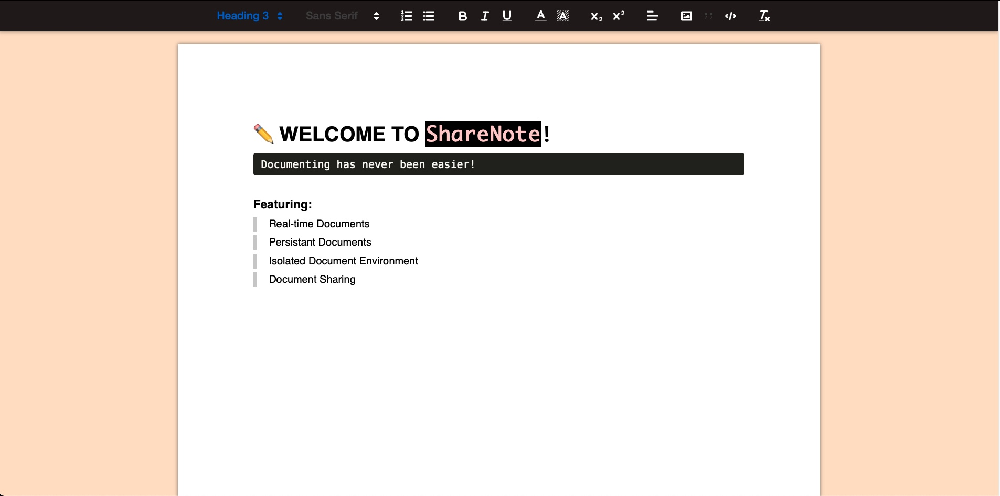
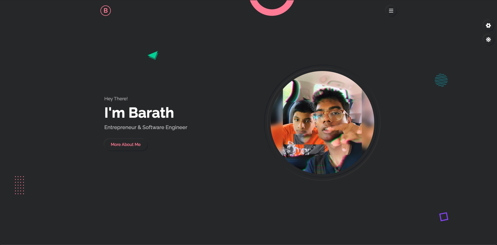
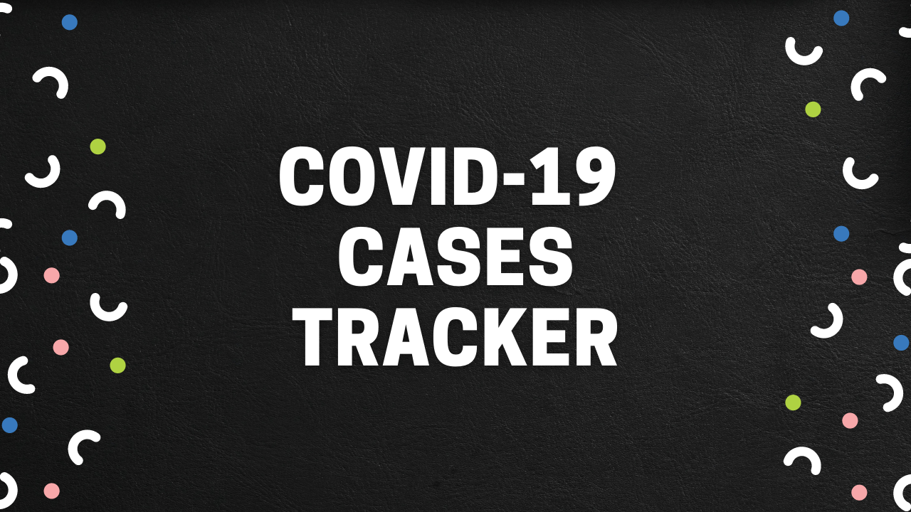

Projects
 View Project
View Project
Hi-Expense: Financial Management Software
Project Brief:
Hi-Expense is a personal financial management software. It has integrated end-to-end authentication with register, login, and password reset functionality. Users can add their expenses and well as their income and track them over time. One can also delete and edit such entries. There is an extensive ajax search functionality for users to search by "source", "amount", "category", "description", "date", and more. This application allows for export capability to CSV, Excel, and/or PDF as well. Last but not least, there is a responsive dynamic expense chart for data visualization. This helps to graphically present expenses. Users are also given the ability to choose their preferred currency: over 100 currencies available!
Project Info:
- Date - 2022
- Info - Personal Project
- Tech Stack - Python, Django, JavaScript, Chart.js, PostgreSQL, HTML, and CSS
- Link(s) - @GitHub

View ProjectShareNote: Online Word Processor
Project Brief:
ShareNote is a real-time online word processor. This application allows a user to generate, edit, save, and share documents. With the help of Socket.IO, ShareNote allows for document collaboration (co-authoring). Every document is associated with a unique documentId. This approach allows for the seperation of documents. No 2 documents will be the same. The text editor was built using the Quill API. Data is managed via MongoDB. Socket.IO handles real-time, bidirectional and event-based communication.
Project Info:
- Date - 2021
- Info - Personal Project
- Tech Stack - JavaScript, Socket.IO, Quill, React, MongoDB
- Link(s) - @GitHub

View ProjectBarath's Portfolio
Project Brief:
My personal portfolio adopts both a single-page application and mobile responsive design. Both concepts were new to me and I am happy I got to learn them! HTML handles the content, CSS handles the styling, and JavaScript handles the communication layer. When you toggled for this description, JavaScript executed! This project will be constantly maintained/updated.

View ProjectCOVID-19 Cases Tracker
Project Brief:
With COVID-19's recent boom, there were thousands of articles, news reports, and videos covering cases around the world. I quickly felt overwhelmed by the amount of information being released daily. To make things simpler for my family and I, this one-stop web-application was developed. One can in a matter of minutes note how the virus is progressing all across the world. Big thanks to the John Hopkins University GitHub repository maintainers! An amazing learning experience working on this Tracker!
 View Project
View Project
Hangman Game
Project Brief:
This is a terminal version of the Hangman game where anyone, who clones the repository and runs the Python script, can play! The purpose of this game was to serve as a delicate ice-breaker for 1-on-1 coffee-chats I had. I was also curious about game development and wanted to try experimenting. Please note that no new rules were added to the game and everything follows as the original Hangman. For those who are new to the game of Hangman, please refer here. Please visit the GitHub link to get started with the game!
Project Info:
- Date - 2020
- Info - Personal Project
- Tech Stack - Python, Z Shell
- Link(s) - @GitHub